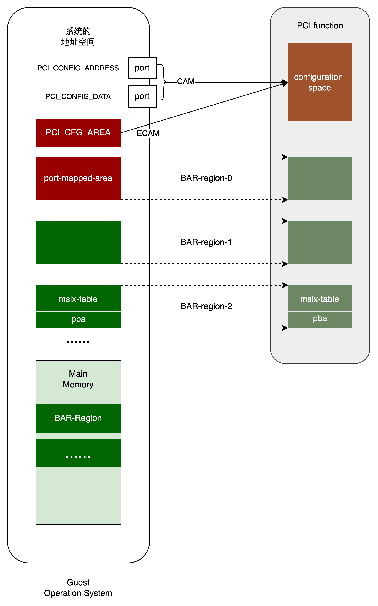
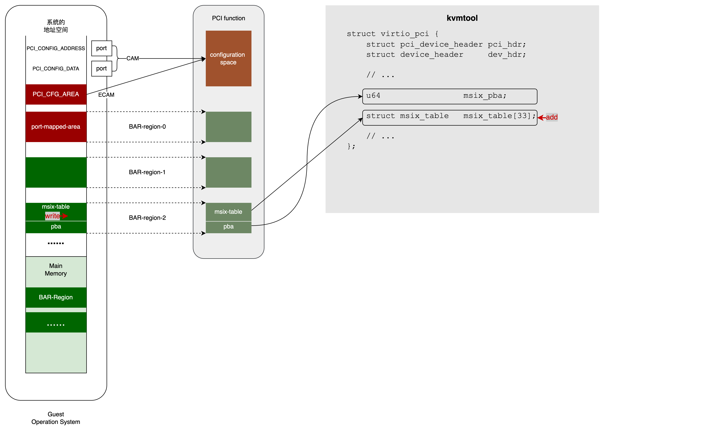
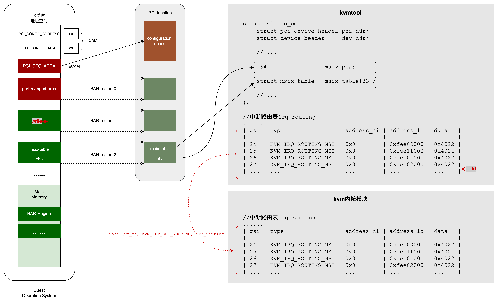
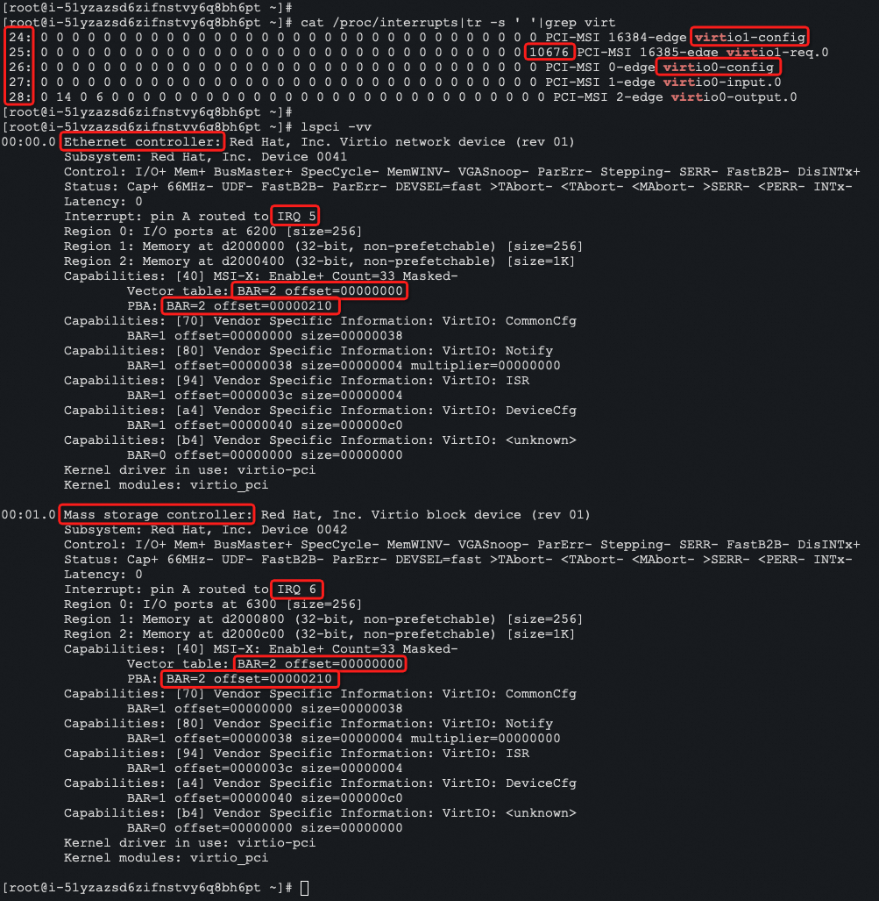

书接前文，本文介绍kvmtool的中断虚拟化。中断虚拟化是基于pci的capability机制实现的。
x86中断回顾 (1)
名词解释 (1.1)
- PIC: Programmable Interrupt Controller, 在x86/x64架构下，特指master-slave级联的2个8259A；
- APIC: Advanced PIC (Advanced Programmable Interrupt Controller)；每个CPU有一个Local-APIC，系统有一个或者多个IO-APIC (一般是一个)；
- ACPI: Advanced Configuration and Power Interface. 是一个specification，包含很多东西，其中一个是使用GSI来进行interrupt routing；
- IRQ: PIC/APIC中的概念，就是中断控制器引脚的编号；PIC有15个, IRQ0, IRQ1, IRQ3, …, IRQ15 (注意IRQ2用于级联)；IO-APIC有24个, IRQ0, IRQ1…, IRQ23；
- Interrupt vector number: 中断向量，Intel的叫法，简称INT；就是指向IDT(中断描述符表)中的一个条目的index；
- System vector number: GSI number. 系统中每个中断源唯一的中断编号，所以数量比较大，比如kvm默认支持1024个(虚拟的)GSI；
如何产生IRQ (1.2)
The two standard interrupt controllers on an x86 system are:
- The 8259A PIC：There are always two PICs, at standard IO addresses, each with eight input pins (IR 0-7). One PIC is the master and handles IRQ 0-7. The other is the slave and handles IRQ 8-15, its output goes to IR2 of the master. (slave的输出连接到master的IR2引脚上).
- The IO APIC (Do not confuse the IO APIC with the LAPIC, 即Local-APIC, CPU core内集成的APIC)：There can be one or multiple IO APICs, all mapped at memory addresses, each with a variable number of input pins INTINx. Usually, one of the IO APIC is wired and configured to emulate the PICs, INTIN0-15 are mapped to IRQ0-15 but this is not a requirement.
这两种是传统的方式，下面会看到还有第三种，即MSI (Message Signaled Interrupt)；
IRQ映射到INT (1.3)
The interrupt controllers are configured to map an IRQ number into a vector number. Once one knows the IRQ number it is easy to get the INT number, the OS generally can easily make a table for that purpose since it is well known how the interrupt controllers are connected to the CPUs.
至此有两级关系：IRQ => INT (interrupt vector)
如何给device关联一个IRQ (interrupt routing, GSI) (1.4)
Associating an IRQ to a device (a process known as interrupt routing) is very complex because it requires a knowledge of how devices are connected. The ACPI specification (注意ACPI不是APIC) use GSIs (Global System Interrupt) to simplify this aspect. 忽略细节，先给设备关联一个GSI，再把GSI映射到IRQ (IRQ再映射到INT).
GSI映射到IRQ (1.5)
In the end, GSIs (or in ACPI words, system vectors) must be mapped to IRQs
- 8259A PIC: the GSIs map directly to ISA IRQs. Thus, IRQ 0 is GSI 0, etc.
- IO APIC: Each IO APIC is assigned a base GSI by the BIOS. Each input pin on the IO APIC is mapped to a GSI number by adding the pin number (zero-based) to the base GSI. Thus, if an IO APIC has a base GSI of N, pin 0 on that IO APIC has a GSI of N, pin 1 has a GSI of N + 1, etc. The IO APIC with a base GSI of 0 maps the ISA IRQs onto its first 16 input pins.
所以总共有三级映射关系: GSI (system vector) => IRQ => INT (interrupt vector)。
注意：system vector(GSI)不要和interrupt vector(INT) 搞混淆。
Message Signaled Interrupts (MSI) (1.6)
上面说的一切都是传统中断，而MSI是一种平替传统中断的新中断机制… The 8259A PIC was the first generation controller, the IO APIC the second, and MSIs are the third.
Traditionally, a device has an interrupt line (pin) which it asserts when it wants to signal an interrupt to the host processing environment. This traditional form of interrupt signalling is an out-of-band form of control signalling since it uses a dedicated path to send such control information, separately from the main data path.
MSI replaces those dedicated interrupt lines with in-band signalling, by exchanging special messages that indicate interrupts through the main data path. In particular, MSI allows the device to write a small amount of interrupt-describing data to a special memory-mapped I/O address (集成于CPU core内的Local-APIC的寄存器，被map到特定的memory address), and the chipset then delivers the corresponding interrupt to a processor.
On Intel x86 systems, the Local-APIC (LAPIC) must be enabled for the PCI (and PCIe) MSI/MSI-X to work, even on uniprocessor (single core) systems. In these systems, MSIs are handled by writing the interrupt vector directly into the LAPIC of the processor/core that needs to service the interrupt.
As an example, PCI Express does not have separate interrupt pins at all; instead, it uses special in-band messages to allow pin assertion or deassertion to be emulated.
一个PCIe设备通常是多队列的，每个队列可以触发一个不同的中断(不同GSI)。并且，不同的中断通过affinity绑定不同的CPU处理，就实现了负载均衡。
How MSI Works (1.7)
There is no interrupt PIN for PCIe interrupt. When device wants to raise an interrupt, an interrupt message is sent to host via inband PCIe channels. The interrupt message is a write command, destination of the write is to the host memory specified by the HOST.
The host specifies the destination address of the interrupt message at the MSI-X table. I believe the MSI-X table is setup by the OS boot up normally. 在后文将看到，host往pci设备的某个bar region写入MSI-X table. MSI-X table告诉pci设备：要触发哪个中断就往哪个地址写什么样的数据。
On X86 platform, the interrupt message is written to LAPIC (Local component of Advanced Programmable Interrupt Controller), usually integrated into the processor itself. 即前面说的：CPU core内集成的Local-APIC的寄存器，被map到特定memory address. On ARM platform, the interrupt message is written to ARM Generic Interrupt Controller(GIC), GIC’s LPI (Locality-specific Peripheral Interrupts) and ITS(Interrupt Translation Service) support MSI-X messages.
MSI和MSI-X (1.8)
MSI和MSI-X是两个不同的版本，引用维基百科：
MSI：MSI (first defined in PCI 2.2) permits a device to allocate 1, 2, 4, 8, 16 or 32 interrupts(所以一个设备可以实现多队列). The device is programmed with an address to write to (this address is generally a control register in an interrupt controller，即Local-APIC的寄存器), and a 16-bit data word to identify it. The interrupt number is added to the data word to identify the interrupt. Some platforms such as Windows do not use all 32 interrupts but only use up to 16 interrupts.
MSI-X：MSI-X (first defined in PCI 3.0) permits a device to allocate up to 2048 interrupts. The single address used by original MSI was found to be restrictive for some architectures. In particular, it made it difficult to target individual interrupts to different processors, which is helpful in some high-speed networking applications. MSI-X allows a larger number of interrupts and gives each one a separate target address and data word. Devices with MSI-X do not necessarily support 2048 interrupts. Optional features in MSI (64-bit addressing and interrupt masking) are also mandatory with MSI-X.
注意一个区别：
- 对于MSI，data是用于identify PCI设备的数字，是系统分配的————系统对PCI设备编程，告诉PCI设备这个数字。PCI设备发中断时，拿data加上interrupt number(应该就是interrupt vector)得到一个新的数字，然后往给定地址上写这个新数字。
- 对于MSI-X，data是系统分配的，直接对应一个中断；PCI设备发中断时，直接往给定地址写这个数字。这一点在kvmtool实验中可以证实。
下文措辞上不区分MSI和MSI-X，一般说的都是它们共同特征；kvmtool实现的是MSI-X。
中断虚拟化 (2)
首先说明，中断虚拟化的工作主要是由kvm内核模块完成的，而不是VMM(kvmtool或qemu)。具体到kvmtool，它的主要工作是构造这么一张表(叫做中断路由表)：
| gsi | type | u.irqchip.irqchip | u.irqchip.pin |
|---|---|---|---|
| 0 | KVM_IRQ_ROUTING_IRQCHIP | IRQCHIP_MASTER(Master-8259A) | 0 |
| 1 | KVM_IRQ_ROUTING_IRQCHIP | IRQCHIP_MASTER(Master-8259A) | 1 |
| - | - | - | - |
| 3 | KVM_IRQ_ROUTING_IRQCHIP | IRQCHIP_MASTER(Master-8259A) | 3 |
| 4 | KVM_IRQ_ROUTING_IRQCHIP | IRQCHIP_MASTER(Master-8259A) | 4 |
| 5 | KVM_IRQ_ROUTING_IRQCHIP | IRQCHIP_MASTER(Master-8259A) | 5 |
| 6 | KVM_IRQ_ROUTING_IRQCHIP | IRQCHIP_MASTER(Master-8259A) | 6 |
| 7 | KVM_IRQ_ROUTING_IRQCHIP | IRQCHIP_MASTER(Master-8259A) | 7 |
| 8 | KVM_IRQ_ROUTING_IRQCHIP | IRQCHIP_SLAVE(Slave-8259A) | 0 |
| 9 | KVM_IRQ_ROUTING_IRQCHIP | IRQCHIP_SLAVE(Slave-8259A) | 1 |
| 10 | KVM_IRQ_ROUTING_IRQCHIP | IRQCHIP_SLAVE(Slave-8259A) | 2 |
| 11 | KVM_IRQ_ROUTING_IRQCHIP | IRQCHIP_SLAVE(Slave-8259A) | 3 |
| 12 | KVM_IRQ_ROUTING_IRQCHIP | IRQCHIP_SLAVE(Slave-8259A) | 4 |
| 13 | KVM_IRQ_ROUTING_IRQCHIP | IRQCHIP_SLAVE(Slave-8259A) | 5 |
| 14 | KVM_IRQ_ROUTING_IRQCHIP | IRQCHIP_SLAVE(Slave-8259A) | 6 |
| 15 | KVM_IRQ_ROUTING_IRQCHIP | IRQCHIP_SLAVE(Slave-8259A) | 7 |
| 0 | KVM_IRQ_ROUTING_IRQCHIP | IRQCHIP_IOAPIC | 2 |
| 1 | KVM_IRQ_ROUTING_IRQCHIP | IRQCHIP_IOAPIC | 1 |
| - | - | - | - |
| 3 | KVM_IRQ_ROUTING_IRQCHIP | IRQCHIP_IOAPIC | 3 |
| 4 | KVM_IRQ_ROUTING_IRQCHIP | IRQCHIP_IOAPIC | 4 |
| 5 | KVM_IRQ_ROUTING_IRQCHIP | IRQCHIP_IOAPIC | 5 |
| 6 | KVM_IRQ_ROUTING_IRQCHIP | IRQCHIP_IOAPIC | 6 |
| 7 | KVM_IRQ_ROUTING_IRQCHIP | IRQCHIP_IOAPIC | 7 |
| 8 | KVM_IRQ_ROUTING_IRQCHIP | IRQCHIP_IOAPIC | 8 |
| 9 | KVM_IRQ_ROUTING_IRQCHIP | IRQCHIP_IOAPIC | 9 |
| 10 | KVM_IRQ_ROUTING_IRQCHIP | IRQCHIP_IOAPIC | 10 |
| 11 | KVM_IRQ_ROUTING_IRQCHIP | IRQCHIP_IOAPIC | 11 |
| 12 | KVM_IRQ_ROUTING_IRQCHIP | IRQCHIP_IOAPIC | 12 |
| 13 | KVM_IRQ_ROUTING_IRQCHIP | IRQCHIP_IOAPIC | 13 |
| 14 | KVM_IRQ_ROUTING_IRQCHIP | IRQCHIP_IOAPIC | 14 |
| 15 | KVM_IRQ_ROUTING_IRQCHIP | IRQCHIP_IOAPIC | 15 |
| 16 | KVM_IRQ_ROUTING_IRQCHIP | IRQCHIP_IOAPIC | 16 |
| 17 | KVM_IRQ_ROUTING_IRQCHIP | IRQCHIP_IOAPIC | 17 |
| 18 | KVM_IRQ_ROUTING_IRQCHIP | IRQCHIP_IOAPIC | 18 |
| 19 | KVM_IRQ_ROUTING_IRQCHIP | IRQCHIP_IOAPIC | 19 |
| 20 | KVM_IRQ_ROUTING_IRQCHIP | IRQCHIP_IOAPIC | 20 |
| 21 | KVM_IRQ_ROUTING_IRQCHIP | IRQCHIP_IOAPIC | 21 |
| 22 | KVM_IRQ_ROUTING_IRQCHIP | IRQCHIP_IOAPIC | 22 |
| 23 | KVM_IRQ_ROUTING_IRQCHIP | IRQCHIP_IOAPIC | 23 |
| gsi | type | u.msi.address_hi | u.msi.address_lo | u.msi.data |
|---|---|---|---|---|
| 24 | KVM_IRQ_ROUTING_MSI | 0x0 | 0xfee00000 | 0x4022 |
| 25 | KVM_IRQ_ROUTING_MSI | 0x0 | 0xfee1f000 | 0x4021 |
| 26 | KVM_IRQ_ROUTING_MSI | 0x0 | 0xfee01000 | 0x4022 |
| 27 | KVM_IRQ_ROUTING_MSI | 0x0 | 0xfee02000 | 0x4022 |
| … | … | … | … | … |
说明：
- 这张表有2种不同的结构(其实还不止2种)，这是通过C语言的union实现的；
- 上半部分是模拟传统的中断方式，即PIC或者IO-APIC：一个gsi号最终被map到一个芯片的引脚上，也就得到了IRQ号：例如Master-8259A的pin0是IRQ0，pin1是IRQ1，pin2没用，pin3是IRQ3，……；Slave-8259A的pin0是IRQ8，pin1是IRQ9，……，pin7是IRQ15；IO-APIC的pin0没用，pin1是IRQ1，pin2是IRQ0，pin3是IRQ3，……，pin23是IRQ23；
- 下半部分是模拟MSI中断方式：一个gsi号最终被map到addr和data；若要触发此中断，就往对应的addr写对应的data；
有一点要注意：在这张表中，gsi不是唯一的，但这并不会引起混淆：要触发某个gsi对应的中断，可能由PIC芯片处理，也可能由IO-APIC处理，到时候逐一调用，哪个能处理哪个处理。应该是连接方式决定的，一个硬件要是模拟连在PIC上就由PIC处理，要是模拟连在IO-APIC上就由IO-APIC处理。
中断路由表是kvmtool在内存中构造的，然后后通过如下接口设置到kvm内核模块:
1 | ioctl(vm_fd, KVM_SET_GSI_ROUTING, 中断路由表地址); |
有了中断路由表，kvm内核模块就可以模拟中断机制。如前所述，kvm内核模块完成主要的中断模拟工作：
- 对于irqchip方式，kvm内核模块模拟芯片(8259A或者IOAPIC)行为，更新芯片的相关寄存器，并唤醒guest vcpu，注入中断；
- 对于msi方式，kvm内核模块往guest的内存addr写data；内存addr映射的是vcpu的Local-APIC的寄存器；
Kvmtool如何触发中断呢？请求kvm内核模块来触发(注：在kvmtool中device向guest发中断用signal一词，guest向device发通知用notify一词)：
- 对于irqchip方式：
1 | ioctl(kvm->vm_fd, KVM_IRQ_LINE, {.irq=gsi}); |
- 对于msi方式:
1 | ioctl(kvm->vm_fd, KVM_SIGNAL_MSI, {.address_lo=addr_lo .address_hi=addr_hi, .data=data}); |
构建IRQCHIP中断路由表 (3)
这部分非常直接，代码如下，结果就是第2节中断路由表的上半部分。
1 | static int irq__add_routing(u32 gsi, u32 type, u32 irqchip, u32 pin) |
构建MSI中断路由表 (4)
PCI的Capability-List (4.1)
前一篇pci virtualization介绍了PCI的configuration space，并着重介绍了64字节的header部分，分为Bridge和Non-Bridge两种类型。这是所有PCI设备的common部分。为了支持设备的多样性，configuration space中还包括一些扩展空间，即Capability-List. PCI是192字节(加上64字节的header一共是256字节)，PCIe是4032字节(加上64字节header是4096字节)，它们都是设备的寄存器。
在这块空间中，有多个capability，每个capability有各自的Id，各自不同的描述结构。并且它们构成一个链表：每个capability都有next指针(下一个capability在configuration space中的偏移)。Header中的Status字段能够表示是否启用了Capability-List，若启用的话Cap.Pointer字段指向链表的头。
系统初始化时enumerate PCI设备，并读取它们的configuration space，然后就知道每个PCI设备是否启用了Capability-List。若启用了，再读取或者写入capability的配置：系统和设备配合完成capability的初始化工作。
MSI中断就是通过Capability实现的。
MSI-Capability (4.2)
MSI-Capability的ID是PCI_CAP_ID_MSIX(即0x11)；
若PCI设备启用了Capability-List，它应该在它的configuration space中做以下设置:
- Header.Status设置特定的bit(
PCI_STATUS_CAP_LIST，即0x10),表示启用了Capability-List； - Header.Cap.Pointer指向Capability-List链表的头；
MSI-Capability的描述结构如下：
1 | struct msix_cap { |
若PCI设备启用了MSI-Capability，它还应该在它的configuration space中做以下设置:
- MSI-Capability在链表中(我们记作msix)，且msix.cap=PCI_CAP_ID_MSIX；
- msix.ctrl: 设备的最大common-queue数，不包括configure-queue；每个queue对应一个gsi，所以设备最多占msix.ctrl+1个gsi；
- msix.table_offset：低3位表示msix-table在哪个BAR中(0到5)；高29位表示msix-table在那个BAR-region中的offset；msix-table下面细说；
- msix.pba_offset：低3位表示PBA(Pending Bit Array)在哪个BAR中(0到5)；高29位表示PBA在那个BAR-region中的offset；
就是说，一个PCI设备可以触发多个中断(gsi不同，对应的IRQ不同，最终的INT也不同)：每个common-queue一个，外加configure-queue一个，共msix.ctrl+1个。前文说，触发MSI中断就是往给定的addr写入给定的data，所以一个PCI设备就有多个addr:data组合。这些addr:data构成一个表，就是msix-table；表项的数量也就是msix.ctrl+1。可想而知，addr:data是系统决定的，而不是PCI设备决定的，所以msix-table应该由系统OS或者BIOS来填写。PCI设备在msix.table_offset中设置的是表的地址(哪个BAR-region的哪个偏移)，且在msix.ctrl中设置了数量；系统读到它们之后，就知道往哪里写msix-table表项，以及写多少个。表项的结构如下：
1 | struct msi_msg { |
每个中断有一个bit来表示是否有pending，所以也构成一个array，叫做PBA (Pending Bit Array)，数量也是msix.ctrl+1。设备在msix.pba_offset中设置PBA的地址(哪个BAR-region的哪个偏移)；系统读到它之后，就知道把pending bit设置到哪里。
另外：msix-table和PBA可以放在同一个BAR-region中，也可以放在不同的BAR-region中，这是设备厂商的自由，都符合PCI协议。Kvmtool模拟的设备放在同一个BAR-region中，且固定为BAR-2。
对于真实的PCI设备，系统IO/BIOS和PCI交换配置，完成了MSI-Capability的初始化。对于kvmtool中的虚拟设备也是一样，guest IO/BIOS和PCI交换配置，最终生成中断路由表中的条目。
kvmtool的实现 (4.3)
启用capability msix (4.3.1)
kvmtool/virtio/pci.c : virtio_pci__init() 每个PCI设备都由本函数初始化：
1 | vpci->pci_hdr = (struct pci_device_header) { |
我们看kvmtool中模拟的PCI configuration space，capability msix是不是在第64字节处：
1 | struct pci_device_header { |
果然，capability msix就是在第64字节处。看它的初始化：
1 | vpci->pci_hdr.msix.cap = PCI_CAP_ID_MSIX; |
对于一个给定的PCI设备，guest系统在enumerate到它之后，就会从它的configuration space读到上面的配置。然后在guest眼中，它看到：

在kvmtool的实现中，是用内存空间来模拟msix-table和pba的:
1 | struct virtio_pci { |
对PCI设备编程设置PCI设备的msix table (4.3.2)
当guest读写BAR-region(这里特指写msix-table)时就会vmexit，kvm内核模块自己处理不了，就会转交给VMM(这里特指kvmtool)；kvmtool对每个BAR-region注册过不同的callback函数，具体到BAR-2就是virtio_pci__msix_mmio_callback()函数。所以guest系统写msix-table，kvmtool就触发virtio_pci__msix_mmio_callback()：
1 | virtio_pci__msix_mmio_callback(...) |
这就模拟了系统(guest)对PCI设备编程：设置msix-table；

构建中断路由表并同步给kvm (4.3.3)
设置好msix-table之后，系统(guest)为queue配置中断。Queue可以分为common-queue和config-queue。Kvmtool中一个PCI设备最多可以使用32个common-queue，实际上可以不启用这么多。配置过程是：
- guest选择一个common-queue；kvmtool记下被选择的common-queue号；
- guest设置被选择的common-queue的size；没看到实际作用，好多设备实现一个空操作。猜测：虚拟环境下，virt-queue有一个大小；vhost设备poll virt-queue以获取请求并处理；若vhost设备慢了，导致virt-queue堆积满(即达到size)，就会导致vmexit。所以这个值对VMM来说没有什么作用。
- guest设置被选择的common-queue的中断；kvmtool为它分配gsi，添加中断路由表项，并告知kvm内核模块更新中断路由表；
- guest发送被选择的common-queue的vring的地址给device；见virtio设备第3节；
- guest启用被选择的common-queue；见virtio设备第4.1.2小节；
Configure-queue和common-queue类似，但不用选择，因为它通过一个特殊的操作VIRTIO_PCI_COMMON_MSIX来配置；而所有common-queue共用VIRTIO_PCI_COMMON_Q_MSIX操作，所以先要选择一个common-queue，配置好一个之后再选择下一个。
Guest系统通过write BAR-1的region来完成上述配置；BAR-1对应的callback是virtio_pci_modern__io_mmio_callback:
1 | virtio_pci_modern__io_mmio_callback(...) |
过程如图：

看一下中断路由表中的MSI表项：
- address_hi和address_lo就是地址的高32位和低32位；一般情况下32位地址就够用了(所以address_hi为0)，64位地址对于MSI是可选特性，对于MSI-X是必须支持的特性(支持也不一定要使用)。这个地址映射到某个CPU的Local-APIC的寄存器。
- data见第1.8节。这里kvmtool实现的应该是MSI-X，所以data是标识中断的，而不是标识PCI设备的(像MSI那样)。在触发中断的地方添加打印语句，发现PCI设备往给定addr上写的就是data本身，而不是data加上interrupt number(像MSI那样)。
最后，看一下guest内的中断触以及PCI设备：

- virtio0是网卡，使用了3个中断，gsi分别是26, 27, 28；其中26是configure-queue；virtio1是存储控制器，也就是虚拟盘，使用了2个中断，gsi分别是24, 25；其中24是configure-queue；注意，从代码中上看，每个设备最多可以用33个中断，实际上guest并没有使用这么多。设备定义自己使用多少queue，例如kvmtool中，blk设备写死使用1个queue(加上configure-queue共2个)；
- 第一个capability (40表示0x40=64?)是MSI-X；
- Vector table(msix-table)在BAR=2上且偏移是0；PBA也在BAR=2上且偏移是0x210=528(msix-table的大小)；和代码对的上。
- /proc/interrupts的第一列是MSI号，即System vector number，而不是interrupt vector number. 所以可以通过/proc/interrupts看设备各个queue触发的中断数，以及中断是否打散到各个CPU，对于物理设备也一样。
- 从图中还可以看到，virtio0(网卡)对应到IRQ 5，virtio1(存储控制器)对应到IRQ 6。一个IRQ再对应多个interrupt vector number?
kvm内核模块的中断模拟 (5)
如前所述，中断的模拟工作主要是在kvm内核模块中完成的：设备要触发中断，要请求kvm内核模块代劳(见第2节)。在kvm内核模块中，模拟了PIC(级联的8259A)以及APIC的功能，当然也包含MSI方式的中断注入。具体参考下列文章：
https://terenceli.github.io/%E6%8A%80%E6%9C%AF/2018/08/27/kvm-interrupt-emulation
https://luohao-brian.gitbooks.io/interrupt-virtualization/content/qemu-kvm-zhong-duan-xu-ni-hua-kuang-jia-fen-679028-4e0a29.html
小结 (6)
通过本文简单了解了MSI/MSI-X中断方式，也在kvmtool中看到它是如何工作的：1. 系统对PCI设备编程，告诉PCI设备msix-table；2. PCI设备发起中断时，向给定的地址写给定的数据(地址和数据都在msix-table中)。在虚拟环境下，中断的模拟其实不是在VMM(kvmtool)中实现的，而是在kvm内核模块中实现的，所以，PCI设备要发起中断，要请求kvm内核模块来完成。